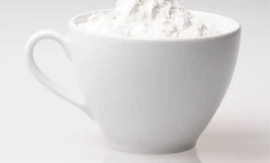
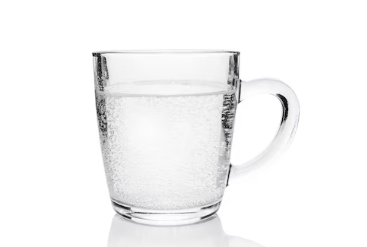
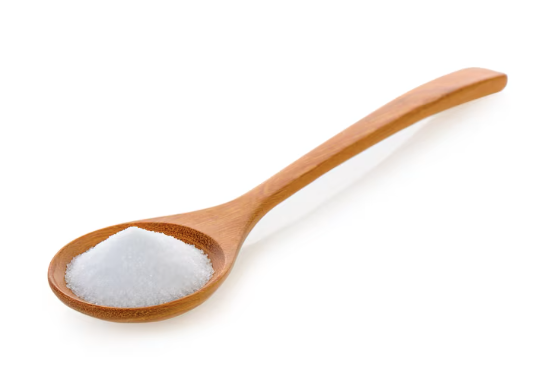

Ingredientes
- 1 taza de harina de maíz precocida (HARINA PAN) 
- 1 taza de agua 
- 1 cucharada de sal 
Descubre cómo hacer las mejores arepas con esta receta fácil
En un bol grande, mezcla la harina de maíz Luego, añade el agua poco a poco mientras amasas hasta obtener una masa suave y sin grumos. Si deseas, puedes agregar mantequilla o queso rallado para darle un toque extra de sabor
Toma una porción de masa y forma una bola. Luego aplánala con las manos hasta obtener un disco de aproximadamente 1 cm de grosor.
Calienta una sartén o parrilla a fuego medio. Cocina las arepas de 5 a 7 minutos por cada lado, hasta que estén doradas y cocidas por dentro.